# A tibble: 10 × 8
species island bill_length_mm bill_depth_mm flipper_length_mm body_mass_g
<fct> <fct> <dbl> <dbl> <int> <int>
1 Adelie Torgersen 39.1 18.7 181 3750
2 Adelie Torgersen 39.5 17.4 186 3800
3 Adelie Torgersen 40.3 18 195 3250
4 Adelie Torgersen NA NA NA NA
5 Adelie Torgersen 36.7 19.3 193 3450
6 Adelie Torgersen 39.3 20.6 190 3650
7 Adelie Torgersen 38.9 17.8 181 3625
8 Adelie Torgersen 39.2 19.6 195 4675
9 Adelie Torgersen 34.1 18.1 193 3475
10 Adelie Torgersen 42 20.2 190 4250
# ℹ 2 more variables: sex <fct>, year <int>Entrega 1
Análisis exploratorio de datos de pingüinos
En esta práctica vamos a realizar un análisis exploratorio de los datos de pingüinos proporcionados por la Dra Kristen Gorman en la Estación Palmer, Antártida.
Lo primero de todo es cargar la librería “palmerpenguins”, así como el conjunto de datos “penguins”.
Algunas unidades muestrales presentan los valores “NA” en ciertas variables, por lo tanto, nosotros consideraremos solo aquellos que presentan unos valores conocidos.
# A tibble: 10 × 8
species island bill_length_mm bill_depth_mm flipper_length_mm body_mass_g
<fct> <fct> <dbl> <dbl> <int> <int>
1 Adelie Torgersen 39.1 18.7 181 3750
2 Adelie Torgersen 39.5 17.4 186 3800
3 Adelie Torgersen 40.3 18 195 3250
4 Adelie Torgersen 36.7 19.3 193 3450
5 Adelie Torgersen 39.3 20.6 190 3650
6 Adelie Torgersen 38.9 17.8 181 3625
7 Adelie Torgersen 39.2 19.6 195 4675
8 Adelie Torgersen 41.1 17.6 182 3200
9 Adelie Torgersen 38.6 21.2 191 3800
10 Adelie Torgersen 34.6 21.1 198 4400
# ℹ 2 more variables: sex <fct>, year <int>La muestra total se ha reducido a 333 unidades muestrales.
Podemos ver en la tabla de datos que hay 8 variables de interés. Estas variables son:
- Especie: Variable cualitativa que hace referencia a la especie del individuo. Toma los valores “Adelie”, “Chinstrap” y “Gentoo”. Observamos cuántas unidades hay por cada especie:
Adelie Chinstrap Gentoo
146 68 119 - Isla: Variable cualitativa que hace referencia a la isla de donde procede el individuo. Toma los valores “Biscoe”, “Dream” y “Torgersen”. Veamos el número de pingüinos que viven en cada isla:
Biscoe Dream Torgersen
163 123 47 - Largo del pico (mm): Variable cuantitativa continua que mide el largo del pico en mm del individuo. Tenemos estos datos generales sobre la variable:
"Min. :32.10 " "1st Qu.:39.50 " "Median :44.50 " "Mean :43.99 "
"3rd Qu.:48.60 " "Max. :59.60 " - Profundidad del pico (mm): Variable cuantitativa continua que mide la profundidad del pico en mm del individuo. Unos datos generales que podemos obtener son:
"Min. :13.10 " "1st Qu.:15.60 " "Median :17.30 " "Mean :17.16 "
"3rd Qu.:18.70 " "Max. :21.50 " - Longitud de la aleta (mm): Variable cuantitativa continua que mide la longitud de la aleta en mm del individuo.
"Min. :172 " "1st Qu.:190 " "Median :197 " "Mean :201 " "3rd Qu.:213 "
"Max. :231 " - Masa corporal (g): Variable cuantitativa continua que mide la masa corporal en gramos del individuo.
"Min. :2700 " "1st Qu.:3550 " "Median :4050 " "Mean :4207 "
"3rd Qu.:4775 " "Max. :6300 " - Sexo: Variable cualitativa que hace referencia al sexo del individuo. Mostramos cúantas unidades hay de cada sexo.
female male
165 168 - Año: Variable cualitativa ordinal que hace referencia al año en que se estudió al individuo. Aún siendo una variable númerica, la trataremos como un factor.
2007 2008 2009
103 113 117 De manera más compacta, tenemos el siguiente resumen de la tabla de datos con R:
species island bill_length_mm bill_depth_mm
Adelie :146 Biscoe :163 Min. :32.10 Min. :13.10
Chinstrap: 68 Dream :123 1st Qu.:39.50 1st Qu.:15.60
Gentoo :119 Torgersen: 47 Median :44.50 Median :17.30
Mean :43.99 Mean :17.16
3rd Qu.:48.60 3rd Qu.:18.70
Max. :59.60 Max. :21.50
flipper_length_mm body_mass_g sex year
Min. :172 Min. :2700 female:165 Min. :2007
1st Qu.:190 1st Qu.:3550 male :168 1st Qu.:2007
Median :197 Median :4050 Median :2008
Mean :201 Mean :4207 Mean :2008
3rd Qu.:213 3rd Qu.:4775 3rd Qu.:2009
Max. :231 Max. :6300 Max. :2009 Un análisis interesante puede ser estudiar las variables cuantitativas continuas en función de la especie, isla y el sexo.
Empecemos viendo qué especies habitan en cada isla a partir de un diagrama circular, donde el área de cada sector es proporcional a la frecuencia del nivel correspondiente.
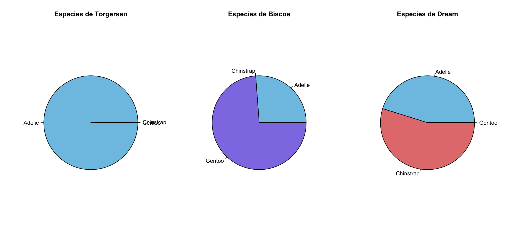
Como podemos observar, los Adelie se encuentran en las 3 islas mientras que la especie Gentoo y la especie Chinstrap solo las podemos encontrar en una de ellas, siendo Biscoe la isla donde habita la especie Gentoo y Dream donde habita la especie Chinstrap. Un analisis interesante que haremos a continuación será comparar las caracteristicas de los Adelie en las diferentes islas para ver si la zona demográfica influye en la evolución de la especie a nivel fisiológico.
Empecemos con la longitud de sus aletas (Hecho de dos maneras, son solo pruebas, el que nos convenza mas lo usamos luego tambien para comparar la masa corporal que es donde creo que puede haber cambios significativos tambien)(también pienso que con este tipo de datos lo mas limpio y donde se ven mejor las cosas es con un boxplot)
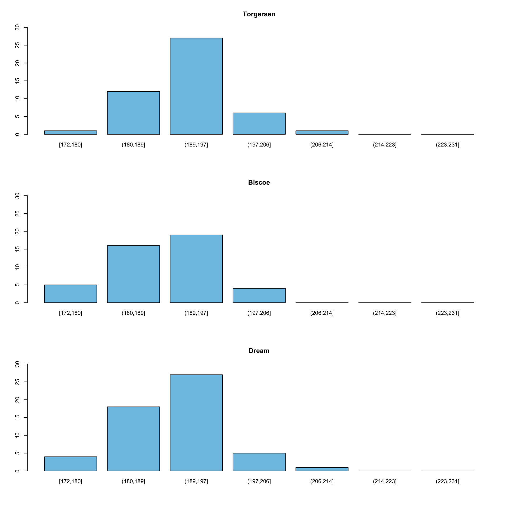
Help on topic 'plot' was found in the following packages:
Package Library
graphics /Library/Frameworks/R.framework/Versions/4.3-arm64/Resources/library
base /Library/Frameworks/R.framework/Resources/library
Using the first match ...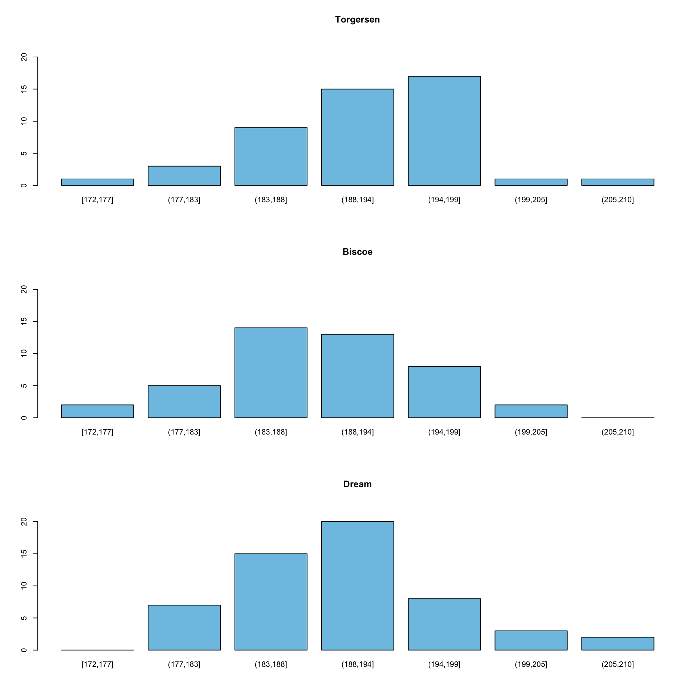
Vamos a ver si existe una variación aparentemente significativa en el peso corporal de la especie Adelie dependiendo de las islas, ya que creemos que podria ser un factor que varie debido a distintos factores, como: la dificultad que tienen los pingüinos para alimentarse debido a los depredadores; la distancia entre sus colonias y el lugar en el que cazan; o por posibles variaciones físicas.
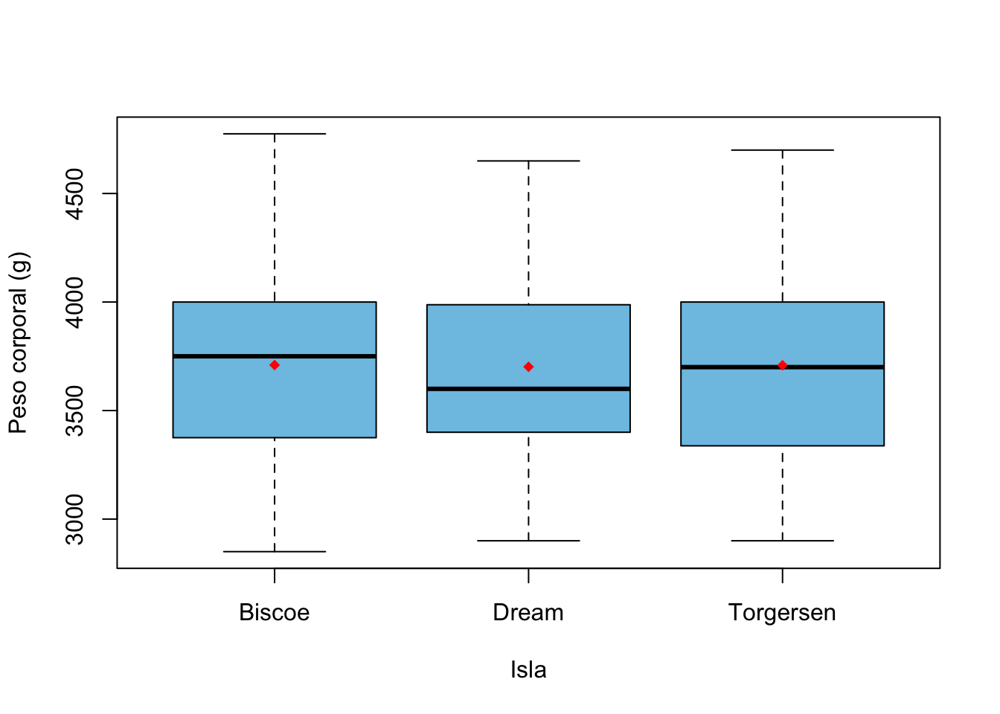
Aparentemente no parece haber diferencias significativas, asi que vamos a dejar a los Adelie para empezar a estudiar las características fisicas de diferentes especies entre ellas y entre sexos.
Analicemos pues los rasgos diferentes de pingüinos segun especies. Aqui tenemos las longitudes de las aletas, picos y sus profundidades, y sus masas corporales:
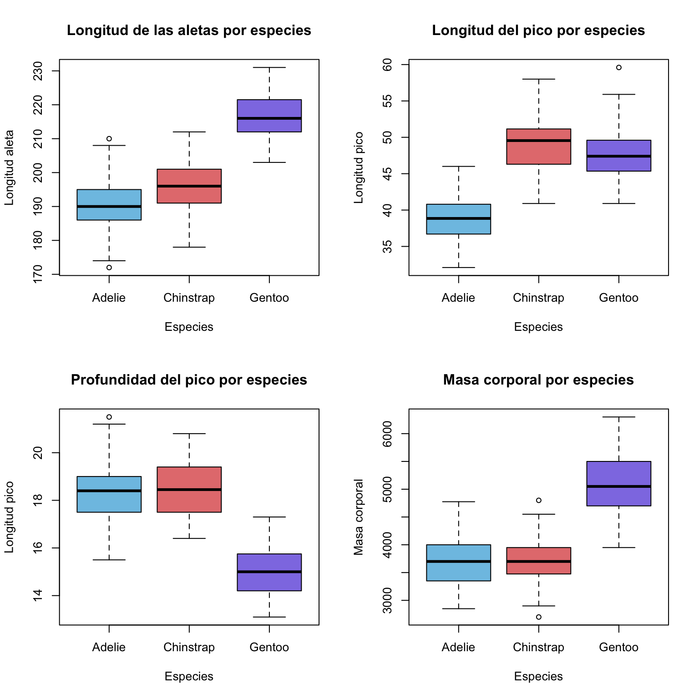
Como podemos observar en los gráficos, los Gentoo son claramente los que tienen las aletas mas largas y los que tienen mayor masa corporal, en cambio son los que tienen la menor profundidad de pico. Por otra parte, podemos observar que las especies Adelie y Chinstrap tienen rasgos muy semejantes a excepción de la longitud de sus picos, en la cual los Adelie son los que tienen el pico mas corto en comparación con las otras dos especies.
(Ahora haria un analisis diferenciando el sexo para ver si varia, pero no se si diferenciar tambien por especies, rollo ver si en los Adelie cambian su peso segun macho o hembra o si hacerlo en general para todos los pingüinos).
(También me gustan los histogramas de freq absolutas de barras que ha hecho Angel abajo, si quereis para que no sean todo boxplot los podemos meter en algun estudio)
En primer lugar, podríamos hacer un análisis de la comunidad de pingüinos según la isla en la que viven, con el fin de determinar si las diferencias geográficas afectan en el desarrollo general.
Una característica que podemos ver es el peso medio y su dispersión por isla:
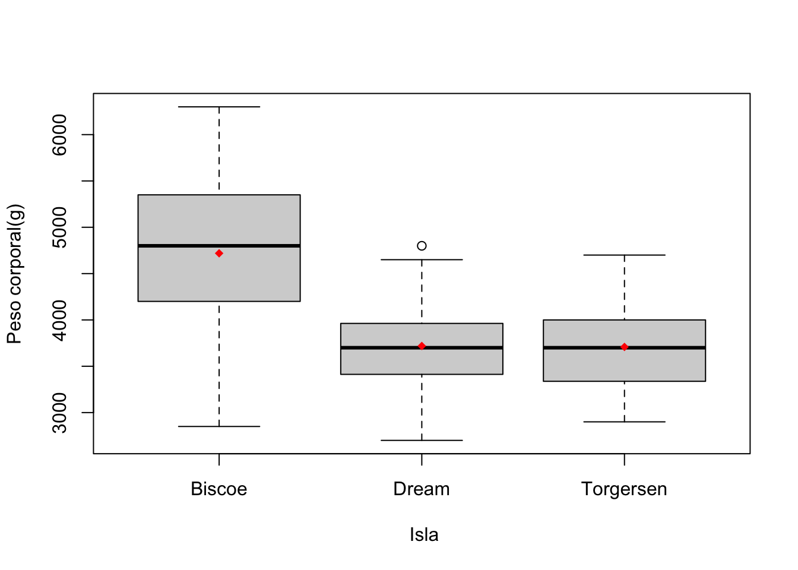
[1] 6300A partir del gráfico, tenemos que los pingüinos que viven en la isla “Biscoe”, tienen un peso medio mayor y un rango de valores bastante más amplio que las otras dos islas. Por otro lado, la isla “Dream” tiene un valor atípico.
Ahora, agruparemos las unidades según la isla y si su peso (en gramos) está entre \([2650, 3000), [3000, 5000)\) o \([5000,6350)\) para así hacer un histograma de frecuencias acumuladas por isla.
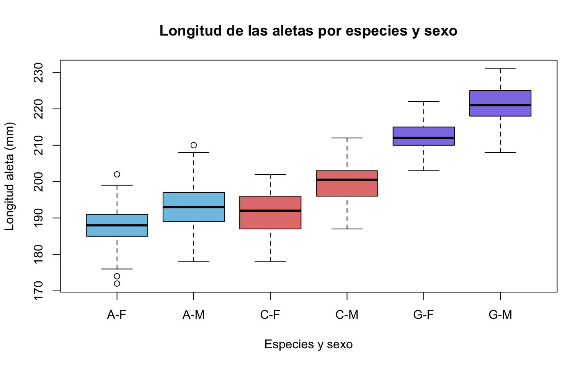
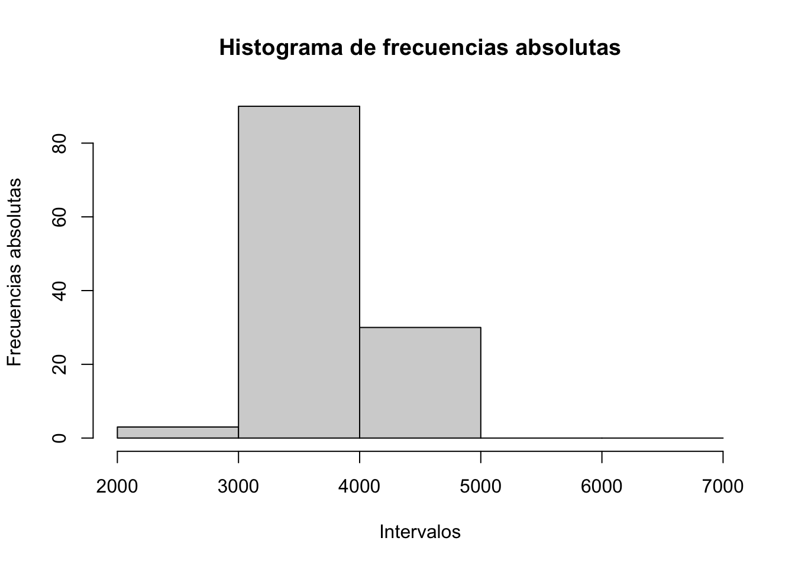
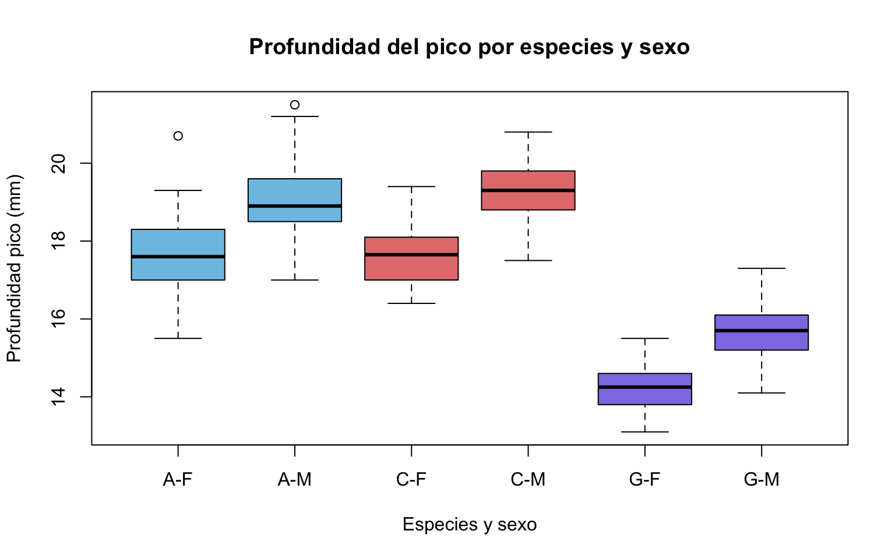
Esta variación en el peso puede deberse por varios factores, como: la dificultad que tienen los pingüinos para alimentarse debido a los depredadores; la distancia entre sus colonias y el lugar en el que cazan; o por posibles variaciones físicas. Por ello, estudiaremos también el largo y la profundidad del pico según la isla.
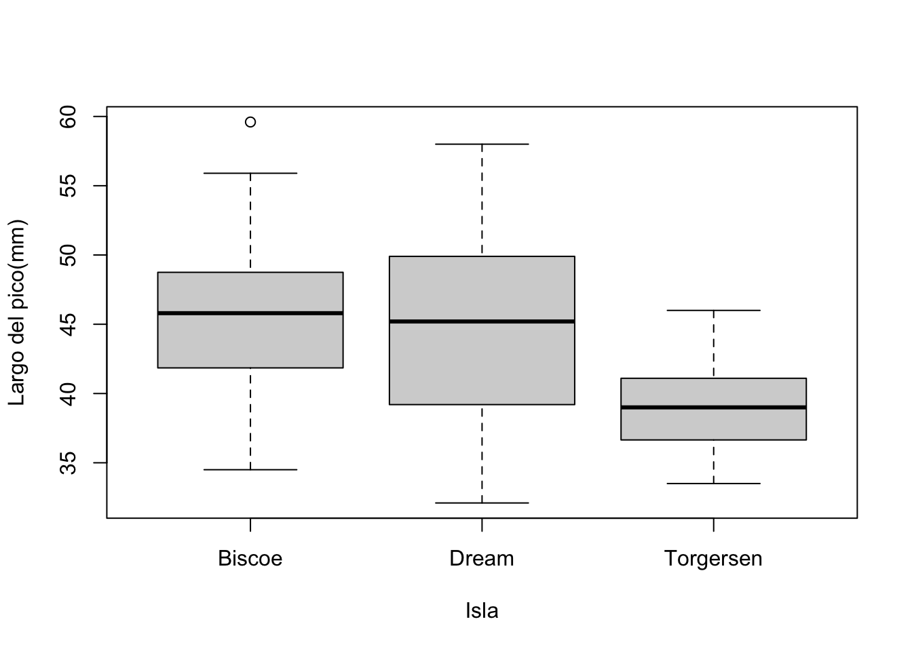
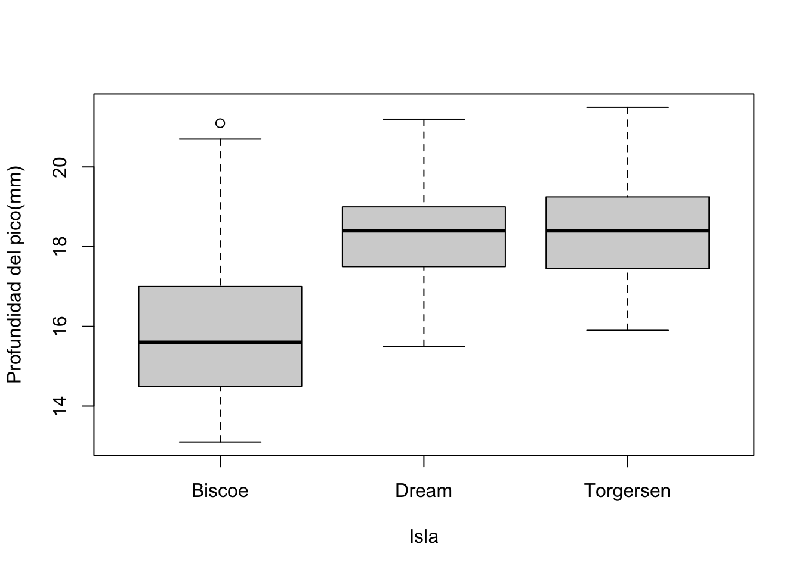
Un análisis interesante puede ser estudiar las variables cuantitativas continuas en función de la especie y el sexo.